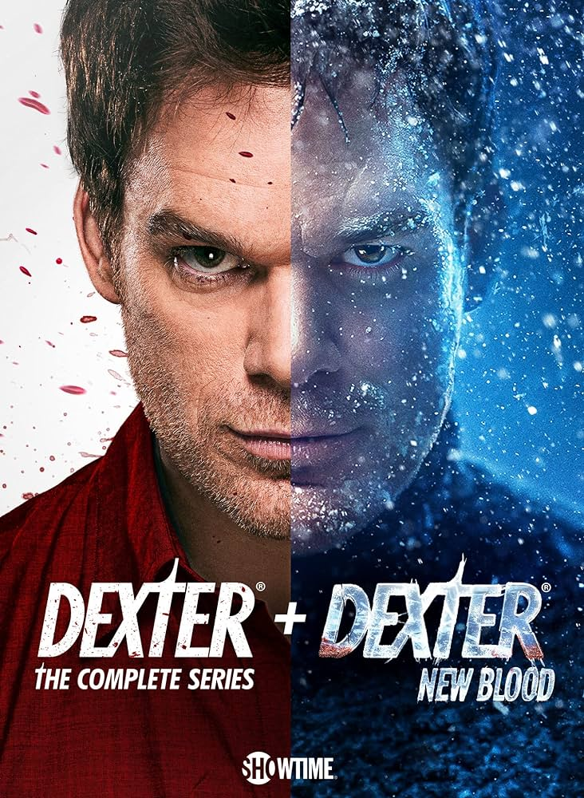

The Witcher (em polonês, Wiedźmin) é uma série de televisão via streaming estadunidense-polonesa de drama e fantasia, criada por Lauren Schmidt Hissrich, baseada na série de livros do escritor polonês Andrzej Sapkowski. Situado em uma terra fictícia de inspiração medieval conhecida como "o continente", The Witcher explora a lenda de Geralt de Rivia e da Princesa Cirila, que estão ligados um ao outro pelo destino. A série é estrelada por Henry Cavill, Freya Allan e Anya Chalotra.

House of the Dragon (no Brasil: A Casa do Dragão) é uma série de televisão de drama e fantasia medieval norte-americana criada por Ryan J. Condal e George R. R. Martin para o canal HBO. O desenvolvimento da série foi realizado por Condal e pelo diretor Miguel Sapochnik, com base em eventos narrados na segunda metade do romance Fire & Blood (2018), escrito por Martin. A série é uma prequela de Game of Thrones (2011–2019) e tem como enredo a disputa dos meios-irmãos Rhaenyra Targaryen e Aegon II pela posse do Trono de Ferro dos Sete Reinos de Westeros.

Dexter é uma série de televisão americana de drama criminal e suspense centrada em Dexter Morgan, um assassino em série com diferentes padrões que trabalha como analista forense especialista em padrões de dispersão de sangue no departamento da polícia do Condado de Miami-Dade
